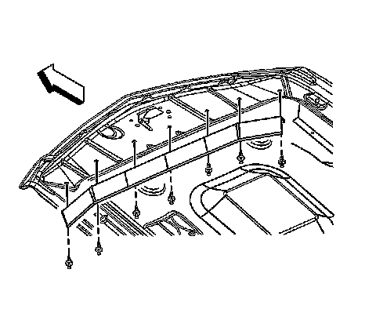

Hood Weatherstrip: Service and Repair
Hood Front Seal Replacement
Removal Procedure

1. Remove the push-in retainers.
2. Using a trim pad clip removal tool, carefully work the seal off the hood from side to side.
3. Remove the front hood seal from the hood.
Installation Procedure
1. Position the front hood seal to the hood.
2. Install the push-in retainers to secure the front hood seal to the hood.